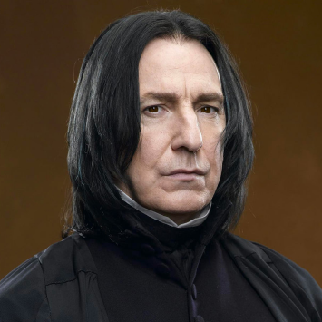
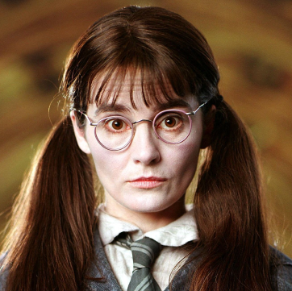
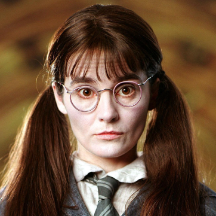

Slytherin
- Ambitious
- Cunning
- Pride
- Leadership
- Competitive

Slytherin was founded by the wizard
Salazar Slytherin who valued pure-blood students.
Because of this, it was rare for a muggle-born student to be sorted
in. Slytherin is known for their strong-willed students that have
the potential to be strong leaders if they manage to follow the
rules. They correspond with the element of water which is
represented in their crest with green corresponding with lakes and
silver corresponding with grey rainwater. Slytherin students are
known to have a predisposition for rule-breaking, cleverness and
rivalry with Gryffindor.




 
